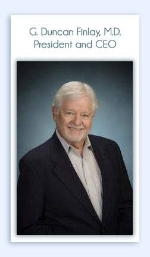

|
 |
G. Duncan Finlay, M.D.
President and CEO
Dr. Finlay was President and CEO of the Sarasota Memorial Health System for five years. Under his leadership, customer satisfaction scores soared and employee turnover rates dropped. The hospital was awarded the Florida Governor’s Sterling Award for Organizational Performance Excellence, was granted Nursing Magnet status, and was named a U.S. News & World Report Top 50 Hospital in 7 categories (the only community hospital to reach these heights).
Dr. Finlay began his career at a private pulmonary and sleep medicine practice in Sarasota. He is a Fellow of the American College of Chest Physicians and American Sleep Disorders Association, and served as President and Co-Founder of the Florida Sleep Medicine Society. Dr. Finlay holds B.S. and M.D. degrees from the University of Florida, and he completed both his internship and residency at Grady Memorial Hospital/Emory University in Atlanta. He has also served as a Captain and Flight Medical Officer in the United States Air Force Active Reserves. |
|||
|
Steven Rothman
Steven Rothman with his brother Dr. M. J. Rothman, are the inventors of Florence A. Rothman Patient Monitoring Index (named in honor of their mother), which has vastly improved continuity of care and helped prevent medical errors in hospitals, nursing homes, and outpatient practices. The Rothman Index has been published in peer-reviewed medical journals and is being implemented commercially by PeraHealth, Inc. (Charlotte, NC) and Alive Sciences, LLC (Sarasota, FL).
Rothman has also achieved prominence within the oil and gas industry, developing new, high-tech methods of exploration for the two companies he co-founded—Bravo Resources, Inc. in New Mexico, and the Denver-based Zavanna, LLC. Previously, Rothman worked as an analyst and consultant for several high-level U.S. government and military programs. As a member of MITRE, a “think tank” created by MIT, he provided onsite systems analysis to NASA, NORAD, USAF and ERDA (Energy Research and Development Administration).
Rothman holds a B.S. degree in electrical engineering from Rensselaer Polytechnic Institute and M.S. degree in engineering management from Northeastern University. |
||||
|
Robert A. Smith PhD Chief Science Officer Robert Smith has over 40 years of medical research experience in academic and federal settings. He has been on the faculty of medicine at Tulane University and the University of South Florida and most recently a program director at the National Heart, Lung, and Blood Institute (National Institutes of Health). In academic settings Dr. Smith’s primary responsibilities included directing anesthesiology, pain medicine, and critical care medicine research. At the NIH, his primary assignment was as a program director with administrative and scientific oversight of a research portfolio that included funded awards in (1) asthma clinical science and translational research, (2) Chronic Obstructive Pulmonary Disease translational research, (3) Cystic fibrosis and (4) respiratory physiology and mechanics basic science research. Dr. Smith is a Fellow in the American College of Critical Care Medicine and a was elected to membership of Sigma Xi, The Research Society in 1986. He received an undergraduate degree in zoology (BA) and graduate degrees in health ecology / epidemiology (MS) and medical science education (PhD) respectively from the University of South Florida, University of North Florida and University of Florida. |
||||
|
Alan Solinger 1941-2017
. CLINICAL VALIDITY OF NURSING ASSESSMENTS
Clinical Implications and . COMPUTING REFERENCE RANGES AS A FUNCTION OF PHYSIOLOGICAL |
||||||
|
|
||||
|
|
||||